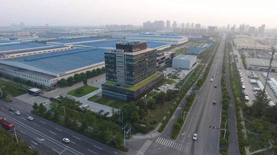
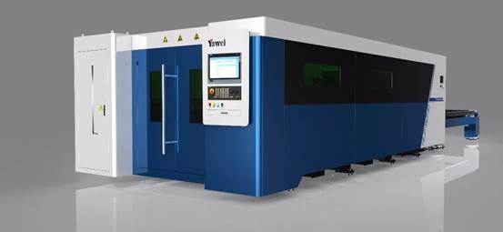
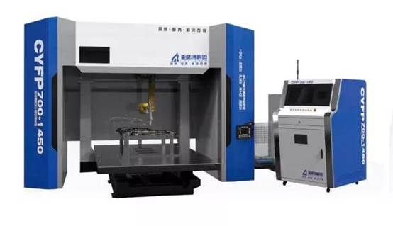
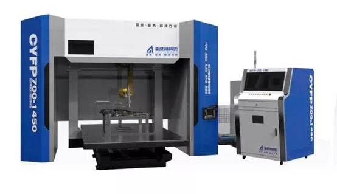
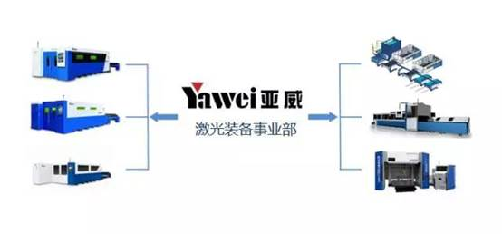

亚威激光厚积爆发，业绩持续倍增
2017-12-16 亚威激光装备事业部
点击亚威激光装备事业部 关注我哟
关注我哟
☀ 定期推送亚威激光热点资讯、新技术与新工艺、使用及维护等优质内容！关注我们妥妥没错！

江苏亚威机床股份有限公司（简称亚威股份，股票代码002559）是国内知名的高端装备及智能制造解决方案服务商，创建于1956年，位于江苏省扬州市，2011年在深交所中小板上市，为汽车、交通、航空、钣金、机械、家电等各大行业的知名企业提供金属成形机床、激光加工设备、工业机器人、自动化生产线、工厂管理软件及面向多行业的智能车间/智能工厂解决方案。
激光加工设备是亚威当前快速发展的重点业务板块。激光加工凭借其高精度、高效率、高柔性的特性，有效降低了制造企业小批量、多批次、复杂产品的加工难度和周期，在各大行业实现广泛应用，并不断拓展新的应用领域，实现传统设备及工艺的替代。
亚威股份的激光装备业务基于数十年的技术积累，也紧跟行业快速增长的大势取得突破性进展，2017年全年有效合同将突破6亿元，连续2年同比增长超过100%，已经发展成为公司的核心支柱业务之一。
亚威的激光业务包括中高功率光纤激光切割机、三维激光切割焊接及增材制造系统(含3D打印)、激光加工自动化生产线。亚威激光业务产品凭借高切割质量、高效率的优势而享誉海内外众多市场，广泛应用于专业钣金加工、电力电气、电梯、轨道交通、汽车制造、工程机械、农业机械、能源工业、航空航天等领域。
当前，亚威已经具备了年产1000台套以上高品质激光加工设备与自动化系统的生产能力，可以有效支撑激光业务未来持续的快速增长。

亚威激光业务发展历程
2008年初，开始自主研发激光切割机。2010年第一台CO2 激光切割机投放市场，获得客户和行业好评，成为当时国内少数几家可以批量生产激光切割机的企业之一。
2013年底，亚威股份与意大利著名的普玛宝（Prima-Power）激光设备公司合作，引入其激光技术和应用工艺，从而大大缩小了亚威激光业务与国际先进同行的差距，不仅在设计和应用工艺方面脱胎换骨，而且对欧洲先进的制造理念和成熟的质量控制方法更有了全新认知，从此亚威激光发展迈上了快车道，亚威光纤激光切割机技术和制造水平也渐趋成熟。
2014年9月，亚威全资收购在机器人激光切割行业处于领先地位的无锡创科源激光设备股份有限公司，进一步巩固了在激光切割行业的优势。创科源主要在汽车制造领域为客户提供机器人激光加工设备的系统集成以及相关技术服务。
2015年3月，经过研发及应用工艺人员对转让技术的消化吸收和再创新，集中了亚威多项专利，嫁接了数十年精密机床的制造经验、技术参数和切割性能领先国内同行的新一代HLF系列高功率光纤激光切割机推向市场。因其功能丰富、切割工艺先进、品质稳定可靠、精度标准业界最高，竞争优势明显，迅速占据了行业制高点，不仅在亚威具有传统优势的钣金行业赢得众多客户青睐，而且在对激光切割质量和效率要求苛刻的钢材加工行业也获得了高度评价，订单纷至踏来，市场占有率节节攀升。
2016年9月，亚威股份与浙工大激光先进制造研究院联合挂牌成立“浙江工业大学—亚威股份联合研发中心”，双方以共建江苏省级重点实验室为项目基础，将围绕激光焊接、激光增材制造和3D打印等激光加工关键技术展开研究并进行市场化推广。
2017年，激光行业需求增速迅猛，亚威激光产品销售也一路高歌猛进，销售业绩增幅远超行业平均水平，稳居行业第一梯队。
 

亚威激光业务发展的能力支撑
1.技术领先优势：创新投入与国际技术合作引进
多年来，亚威始终坚持以技术领先为代表的核心战略理念。近年来公司承担5项省级以上重大科研攻关项目，3个新产品被认定为江苏省首台套重大装备，36个新产品被认定为省级以上高新技术产品，获省级以上科技进步奖5项，获各类专利125项，其中发明专利15项，获软件著作权4项，主持或参与国家、行业标准起草5项。同时亚威还注重整合全球资源，先后与瑞士SMS公司、意大利SLM公司、日本日清纺公司等国外技术公司、知名企业进行技术和投资合作；与清华大学、东南大学、河海大学等国内知名高校长期保持紧密的合作关系，不断推进企业技术创新，巩固提升亚威技术优势。
2.生产制造优势：全面信息化和精益生产
在产品制造环节，亚威拥有先进加工、检测、计量装备300余台套，进口落地镗铣床、数控龙门和立式加工中心等主要数控精密高效和大型加工中心100多台套，三坐标测量仪、激光干涉仪等各类精密检测仪器10多台套。先进的加工设备和精密的检测仪器对产品质量提高、生产效率提升起到了有力的保障作用。亚威注重信息化技术在生产过程中的推广应用。通过SAP系统对产品制造全过程资金流、数据流、信息流进行充分整理、有效传递，把购、存、产、销、人、财、物等各个方面合理地配置与利用，通过技术数据与生产制造有效转接、全部存货资产库存量适时动态监控、整个生产制造过程中所产生的数据完整性采集，使每个零件成本、每个工作中心费用、每个订单成本一目了然，企业生产经营成本得到有效管控，大大增强了市场应变能力。目前关键加工和检测设备已基本实现数控化，关键工序的数控化率已达到100%。采用世界先进的制造技术和管理方法，坚持无止境地提升实物质量、提高生产效率、降低制造成本、缩短交货周期，持续推进敏捷生产体系建设，逐步实现制造水平和生产管理水平国内领先的目标。
3.客户服务优势：完善销售网络和优质服务水平
利用全覆盖的网络，亚威以服务零距离、客户零烦恼的理念为客户带来全方位无缝隙的技术服务和良好的客户体验。目前公司在国内建有42个集销售、服务于一体的办事处，在国外40多个国家建有销售代理机构。日益完善的国内、国际市场营销服务网络，为客户提供中高端数控成形加工机床及成套设备，同时提供全方位的技术售后服务。即将推出的亚威机床设备健康保障系统，是基于RFID的数据采集技术和自主开发的功能软件，对数控机床运行状态和数据进行实时采集与远程监控，结合云平台及大数据平台的数据分析能力，实现智能化的设备故障诊断。与国内外同行相比，亚威能够提供最及时、高效的客户服务，亚威的服务质量也得到了客户的普遍认可。
未来，亚威将继续集中公司优质资源，深化“内涵式增长+外延式扩张”双轮驱动的发展战略。通过内部业务培育和外部投资并购两种方式并举，不断完善激光产业链布局，重点发展以激光智能装备为代表的高端制造和一体化激光解决方案能力，并积极拓宽行业领域覆盖消费电子、汽车电子、半导体、人工智能等激光精密加工领域，为客户提供增减材复合加工能力、产线自动化/工厂智能化整体解决方案，坚持创新驱动，绿色发展，持续为客户创造价值，践行“中国制造2025”，为中国迈向制造强国的目标贡献自己的一份力量，向智能制造、智慧工厂更高远的目标奋进。
做国际一流的激光装备及解决方案服务商
亚威60多年制造经验沉淀，现代化精益生产管理，国际一流的供应商战略合作，全生命周期服务，尽解您后顾之忧。


长按二维码，请关注亚威激光装备事业部
服务热线：400-000-2559